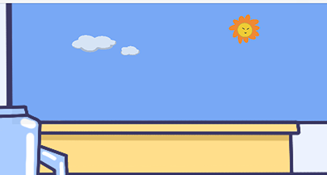
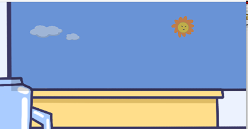
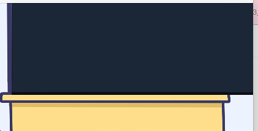

Dessert Simulator – Game UI & Visual Identity
Dessert Simulator is a Java interactive game where players follow a cat guide to create custom desserts by dragging and dropping ingredients into place. Players can experiment with different flavors, such as strawberry or mango, while enjoying an interactive and relaxing experience. I developed the entire game independently, including programming, animations, and all visual/UI design. The goal was to convey a cute, playful dessert-making atmosphere inspired by childhood cooking games.

2024
Eclipse
Visual UI
Individual Project

Visual Flow / Story Board
This storyboard illustrates the user interaction flow in Dessert Simulator. The sequence begins at the initial screen, where players tap to start. The menu provides instructions and guidance from the cat character. Players proceed to drag ingredients — such as ice, milk, and syrup — into the container, initiating the dessert-making process.
Design Process & Iteration


The initial prototype included collage-style graphics with overcomplicated shapes, which made consistency difficult. The final version simplified the elements and adopted a pastel macaron palette, enhancing harmony and cuteness. Hand-drawn illustrations were used to create a cohesive aesthetic that feels approachable and warm.


For the UI, I prioritized usability and visual clarity. Interactive elements such as buttons were placed on the right side to accommodate natural hand movement. The fridge uses clear grouping and labeling, while interactive feedback is subtle — players can tap to skip dialogue without disrupting gameplay.
Tools & Techniques





All illustrations were created in Procreate, with a purchased pixel font to support the retro, playful mood. The game also features a dynamic day-to-night animation, coded to enrich the atmosphere.
Outcome & Reflection
The final design delivers a lighthearted and immersive dessert-making experience. The simplified style improved visual consistency and emphasized the cute, inviting tone intended. This project taught me how iteration refines aesthetics and how UI decisions directly affect user engagement. Combining illustration, interface design, and interactivity strengthened my ability to craft cohesive visual experiences for digital media — skills that align perfectly with my future path in graphic and digital design.
Skills Strengthened
UI Design | Digital Illustration | Game Asset Integration | Iterative Design | UX Thinking
Key Takeaways
- Learned how UI layout affects player experience.
- Found that simplifying visuals creates a cleaner and cuter style.
- Improved skills in combining hand-drawn art with interactive gameplay.